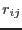
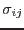
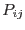
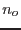
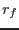
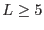

XMM-Newton Science Analysis System
catcorr (catcorr-0.9.1) [xmmsas_20170112_1337-16.0.0]
If  is the great-circle distance between an X-ray detection (i) and
an optical or infra-red source (j), and  is the associated
error, then the probability of match  is given as:
while the probability of a coincidence with a optical/infra-red object within
a radius when there are  optical/infra-red objects in the field
of view of radius  is given by:
The net probability is the difference of these, subject to being above zero.
Thus the overall goodness-of-fit is computed as:
Note that there are three components in which are summed in
quadrature:
- The estimated X-ray positional error in the OBSMLI file which is
given in the column RADEC_ERR,
- The corresponding positional error in the reference catalogue,
- An additional systematic error determined to be 0.35 arc-seconds.
The procedure maximises L over all possible matching pairs as the
frame shifts and rotations are applied.
The parameter minfit determines the minimum value of L for which
the fit is accepted. It defaults to 10.0. Extensive trials have shown that a
useful positional correction can be obtained if the goodness-of-fit
.
XMM-Newton SOC/SSC -- 2017-01-12